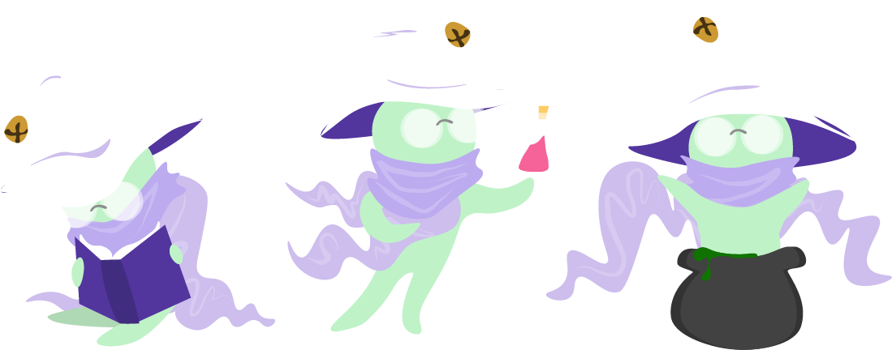

Companions in DREAMWILLOW
Dec 18, 2019
This post is about the role of companions in the recent WolverineSoft Studio release, DREAMWILLOW.
When trying to come up with a new game idea, a common suggestion is to think of a game that already exists, and
add a twist to it. This allows you to spend less time reinventing tried-and-true mechanics from scratch and more
time on curating an experience around a small -- but polished -- new idea. This is the exact philosophy that led to
DREAMWILLOW's creation. It's your typical 2D top-down twin-stick shooter with a single twist:
as a necromancer, you have the ability to raise foes from the dead to fight along side you once you've bested them in combat.
There are a lot of reasons that I could say the decision to add AI companions to the game was a naive one. Frankly, getting AI allies right
is something that even AAA studios struggle with all the time. But I'd like to focus in on
two major issues that we ran into during the development process -- one we were able to solve, and one we were not.

Maintaining the Player's Combative Agency
Combat in DREAMWILLOW was never meant to make the player feel incredibly powerful like what you might find in the likes of the original God of War
games, but from the get-go we knew the main character should be reasonably strong. One of our core pillars was the feeling of "willfully throwing yourself
into chaos to achieve some goal." Our thinking was that the main character wouldn't throw themselves into a forest full of enemies if they didn't think they
could make it to the end. However, our first iteration of companions had them spawning and...immediately clearing out the floor of enemies before the player
could even do anything. Did it technically make our main character strong? Sure. Did it FEEL like our main character was strong? Of course not. The goal quickly
became to kill one or two enemies and let your companions take care of the rest. To the player, companions felt condescending and disproportionately strong compared
to their master.
Okay, yes, one of the biggest problems with companions was that we hadn't implemented iframes on enemies yet, so all of their attacks were one-shotting whatever they touched
due to doing ~30 attacks worth of damage per second. That was an easy fix. But even then, having companions hunt down enemies with razor sharp efficiency posed a serious
question to the design team: how do you keep your companions from taking away the player's combative agency without making the AI feel clunky or annoying? On one hand, it
was nice that your allies would always physically get out of your way when you got near an enemy. But it isn't fun when every enemy you find is already a pile of bones. Keep the companions
closer to the player and you feel more in control, but now your companions act as an impenetrable wall between you and your foes. Make companions weaker and they feel unnecessary to gameplay.
So what did we do?
 Well, several things. We liked the feeling of the companions following closely behind you, so we kept their range short. We liked their power level because it gave the player incentive to use our
one "twist" mechanic. But we didn't like how they seemed to take over every fight, so to make them seem like less of the stars of combat, we took away their hurtboxes. Instead of being able to die on their own,
companions would now be "sacrificed" when the player ran out of health. This inadvertently solved another problem that we were having: in a game where projectiles were constantly flying around
the screen, it felt unfair when companions went off and died on thier own because they weren't intelligent enough to avoid an enemy's attack.
Well, several things. We liked the feeling of the companions following closely behind you, so we kept their range short. We liked their power level because it gave the player incentive to use our
one "twist" mechanic. But we didn't like how they seemed to take over every fight, so to make them seem like less of the stars of combat, we took away their hurtboxes. Instead of being able to die on their own,
companions would now be "sacrificed" when the player ran out of health. This inadvertently solved another problem that we were having: in a game where projectiles were constantly flying around
the screen, it felt unfair when companions went off and died on thier own because they weren't intelligent enough to avoid an enemy's attack.
With these changes in place, we had gotten companions to a point where they felt like powerful additions to the player's arsenal, but it was still the PLAYER's arsenal. You were
the star of combat, you just had loyal half-dead allies fighting alongside you and giving up their newly-leased lives for the sake of their master. I consider this a pretty elegant solution
for some inexperienced college-level game designers to come up with, and I'm still pretty proud of it.
Now for the problem we couldn't solve.

DREAMWILLOW's Positive Feedback Loop
Game Maker's Toolkit did a fantastic video on feedback loops in video games, but in short, a feedback loop is when the success or failure
of the player impacts their likelihood of future successes and failures. A core challenge of making almost any game lies in striking the balance between punishing the player for their failures without
discouraging them and rewarding them for their success without taking away from the challenge of the game. Generally, games will increase the difficulty as you progress, all while equipping you to handle
new challenges with rewards from past success. A basic example of this is a leveling system in JRPGs, where late-game enemies are immensely stronger than those early on, but so is the player due to all of the experience
points they've gained up until that point.
DREAMWILLOW doesn't have levels or experience points, but there is a shop after every floor that allows you to buy a health potion, max health upgrade, secondary attack upgrade, and most important of all:
another mask. Masks are the in-game items that allow you to resurrect companions, and you lose them if the companion gets sacrificed. On the surface, this seems like a fair punishment for playing poorly.
You get hit by too many enemy attacks and run out of health? You lose a companion and therefore one of the masks that you saved up for.
 Of course, this can be a damning punishment. If you start off with two masks, and have an early death while you're still learning the ropes, you're instantly starting off the game at a massive disadvantage. You're bad at the game, and now one of your biggest
resources has just been ripped away from you. While it's possible to make it through a level with just one companion, the odds you'll be able to defeat enough enemies to save up for a mask in the shop is now quite low. At this
point, you likely don't feel encouraged to get better at the game, but overwhelmed and frustrated by how difficult it seems to even just get back on track.
Of course, this can be a damning punishment. If you start off with two masks, and have an early death while you're still learning the ropes, you're instantly starting off the game at a massive disadvantage. You're bad at the game, and now one of your biggest
resources has just been ripped away from you. While it's possible to make it through a level with just one companion, the odds you'll be able to defeat enough enemies to save up for a mask in the shop is now quite low. At this
point, you likely don't feel encouraged to get better at the game, but overwhelmed and frustrated by how difficult it seems to even just get back on track.
Conversely, consider the case where the player has made it to the third level without running out of health. They're on a roll. They're also at 4 companions with half the game to go. The amount of lives they can afford
to lose has been increasing this whole time despite them showing that they really don't need the help. At this point, the game has essentially become trivial. Levels can be beaten by just sprinting through them and ignoring the
enemies because the player doesn't need the money to buy upgrades anymore. Any damage they take is nullified by the whopping 4 extra lives they have.
So the system is clearly broken. You get punished way too hard for being bad, and the game only gets easier as you do better. The game has a terrible snowball problem, and you only wouldn't notice it if you were a
perfectly average player. What did we do to solve it?
 We made the enemy encounters more difficult in the later levels, decreased the amount of companions you started with, and made other resources more accessible, like adding health potion drops in outside the shop. Unfortunately, none
of these approaches really solved one of the feedback loops without worsening the other. Now that the game is finished and I've had a few weeks to reflect, I've come to learn that we weren't really aiming to solve the root of the problem
but rather placing a mound of band-aids over it. Rather than turning existing knobs in the game, I would've loved to see us implement new systems to counteract or work with the companions. Perhaps companions could be purchased
using a different currency tied to how much damage you've taken, or how many close calls you've had. Or maybe the game should implicitly try to protect the player from themselves by
subtley making companions weaker in numbers or when you're at full health. I still can't say I'm sure of what the solution is, and we didn't exactly have an abundance of time for new systems by the end -- but I do think it's something we
(particularly myself, as the lead designer on the companions system) should have prioritized more. Still, it's a great lesson in design that I'm excited to apply to future projects.
We made the enemy encounters more difficult in the later levels, decreased the amount of companions you started with, and made other resources more accessible, like adding health potion drops in outside the shop. Unfortunately, none
of these approaches really solved one of the feedback loops without worsening the other. Now that the game is finished and I've had a few weeks to reflect, I've come to learn that we weren't really aiming to solve the root of the problem
but rather placing a mound of band-aids over it. Rather than turning existing knobs in the game, I would've loved to see us implement new systems to counteract or work with the companions. Perhaps companions could be purchased
using a different currency tied to how much damage you've taken, or how many close calls you've had. Or maybe the game should implicitly try to protect the player from themselves by
subtley making companions weaker in numbers or when you're at full health. I still can't say I'm sure of what the solution is, and we didn't exactly have an abundance of time for new systems by the end -- but I do think it's something we
(particularly myself, as the lead designer on the companions system) should have prioritized more. Still, it's a great lesson in design that I'm excited to apply to future projects.
If you've read this far, thanks so much! I hope you enjoyed it. You can check out DREAMWILLOW here; the project is really special to me and I'm super proud of it.